Префектура Сага · Сага · еда
Карри «Акинбо» в Саге: курс из семи блюд, где главные роли играют овощи
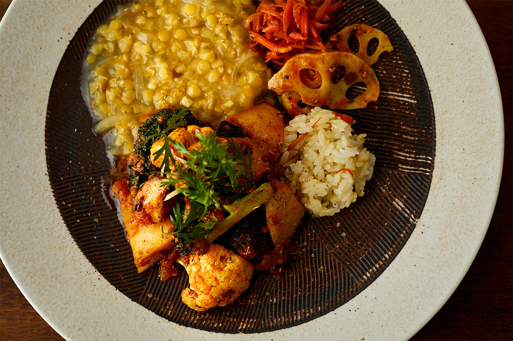
В деревенском доме под Сагой работает ресторан карри, куда едут со всей Японии. Записаться нужно заранее, за стол садятся не больше четырёх человек, а меню каждый день собирают из того, что привезли местные фермеры.
Ресторан
«Акинбо»: карри только по записи
Цветная капуста с хрустом, сочный корень лотоса, рассыпчатый батат. Каждый овощ сохраняет свою текстуру, а специи раскрывают его вкус постепенно, без лишнего напора. Так кормят в «Акинбо», ресторане карри на окраине города Сага, столицы одноимённой префектуры. Работает он только по предварительной записи, и подают здесь только курс.
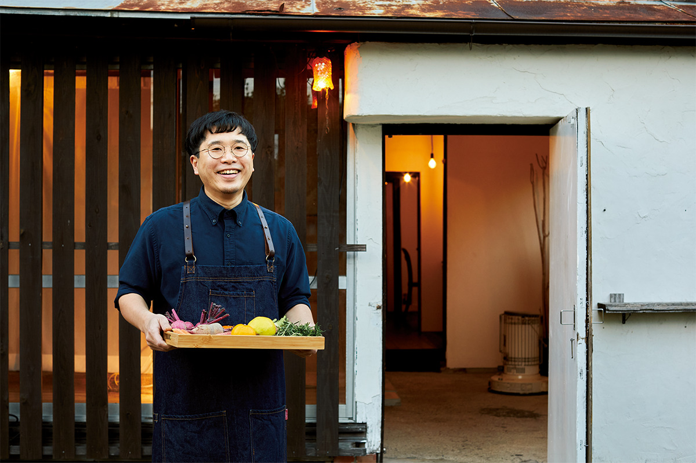
«Специи здесь только помогают. Главное в моих блюдах это овощи, и всё благодаря продуктам из Саги. Бывает, сам не замечаю, как говорю гостям: „Вкусно же, правда?“»
шеф «Акинбо»
После художественного института в Токио хозяин работал в суши-ресторане и тогда же увлёкся карри. Разбирался в нём сам, без учителей, и в 2010 году открыл первое «Акинбо» в токийском районе Кинситё, а в 2015 году вернулся в родную Сагу и перезапустил ресторан в новом формате. Карри в Японии давно делится на множество направлений, и в токийском мире карри у «Акинбо» уже было имя.
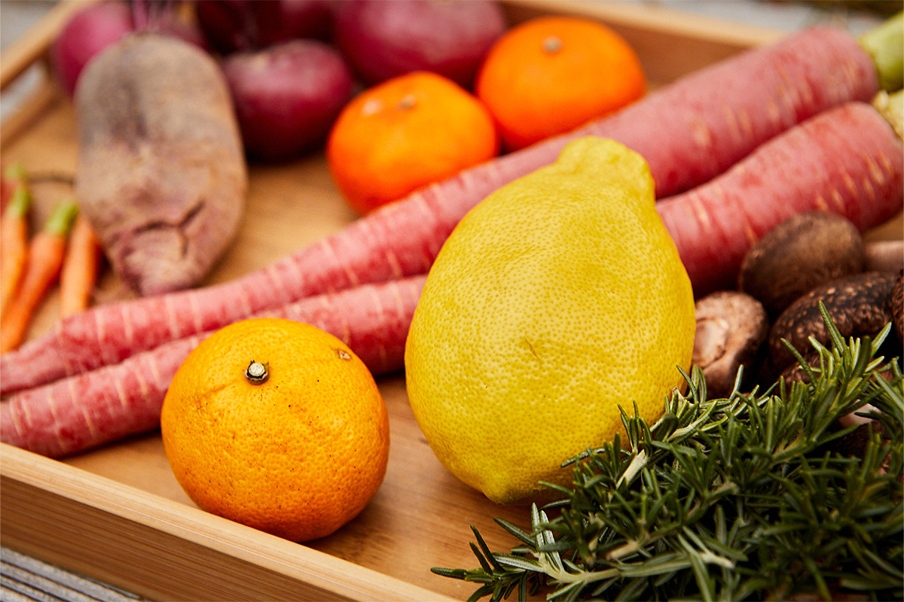
Причину переезда шеф объясняет просто: в Токио приходилось думать о том, как быстрее пропускать гостей, и многое из задуманного сделать не получалось. Ему хотелось другого: чтобы время за столом текло спокойно, а с теми, кто пришёл есть карри, можно было поговорить. Из этой идеи и вырос формат, в котором ресторан работает с 2015 года. На обед и на ужин принимают не больше четырёх гостей, только по записи.
Курс состоит из семи блюд, и каждое зависит прежде всего от продуктов этого дня. Животные жиры шеф почти не использует. Вкус и аромат он вытягивает овощными бульонами и специями, которые не перебивают продукт. Ради этого курса в «Акинбо» специально приезжают любители карри и гурманы из других префектур.
«С тех пор как я вернулся в Сагу, я ясно чувствую, что стал готовить лучше»
шеф «Акинбо»
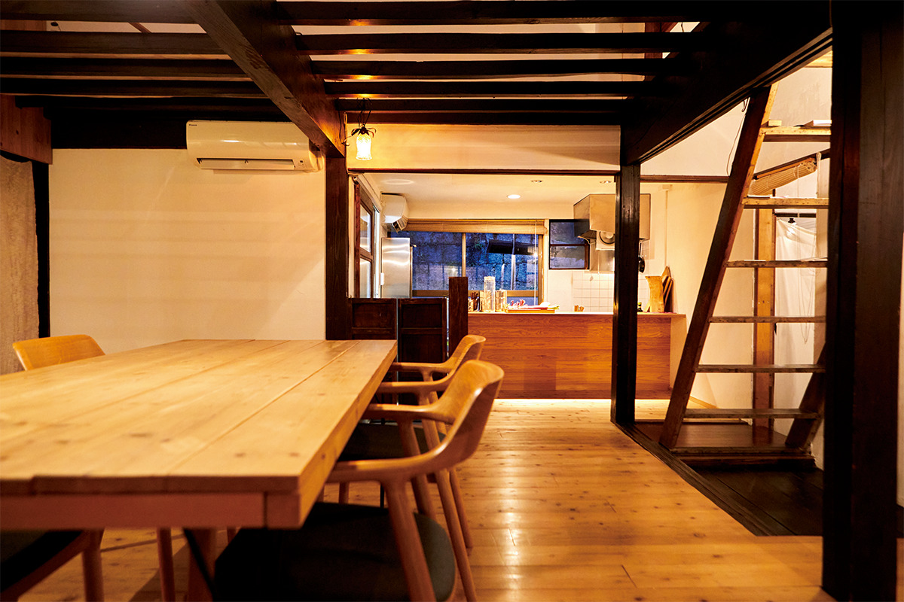
Курс
Семь блюд из продуктов префектуры
Лучше готовить шеф стал, по его словам, благодаря местным производителям. Одно из хозяйств, где он берёт продукты, выращивает больше 100 видов овощей почти без вмешательства в природу, а говядину он заказывает в мясной лавке TOMMY BEEF, которая работает только с постным мясом.
«Главное в том, кто выращивает продукт. Придумывать блюда из того, что дают люди, которых знаешь в лицо, по-настоящему интересно. И я считаю своей задачей рассказывать гостям о Саге через еду и разговор: о продуктах, о людях, о красоте природы, которую замечаешь в обычной жизни»
шеф «Акинбо»
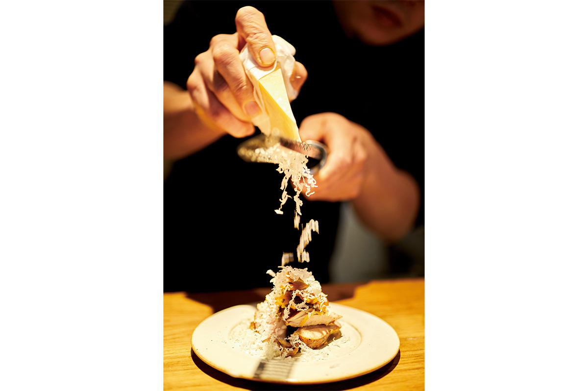
Курс, который описан ниже, подавали в начале весны 2023 года. Меню меняется вместе с сезоном.
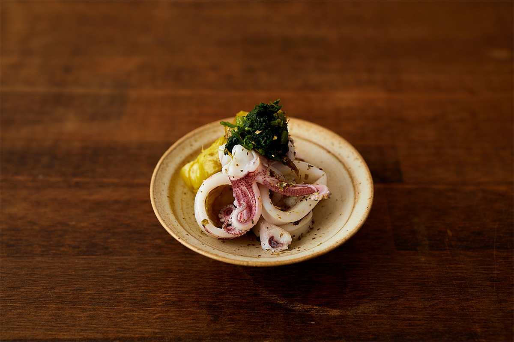
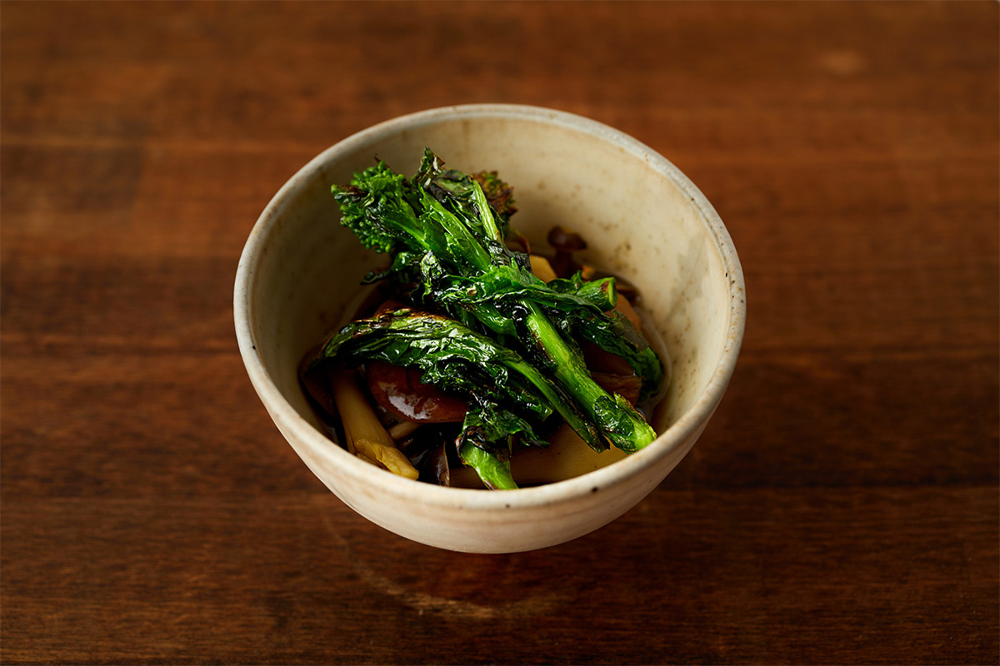
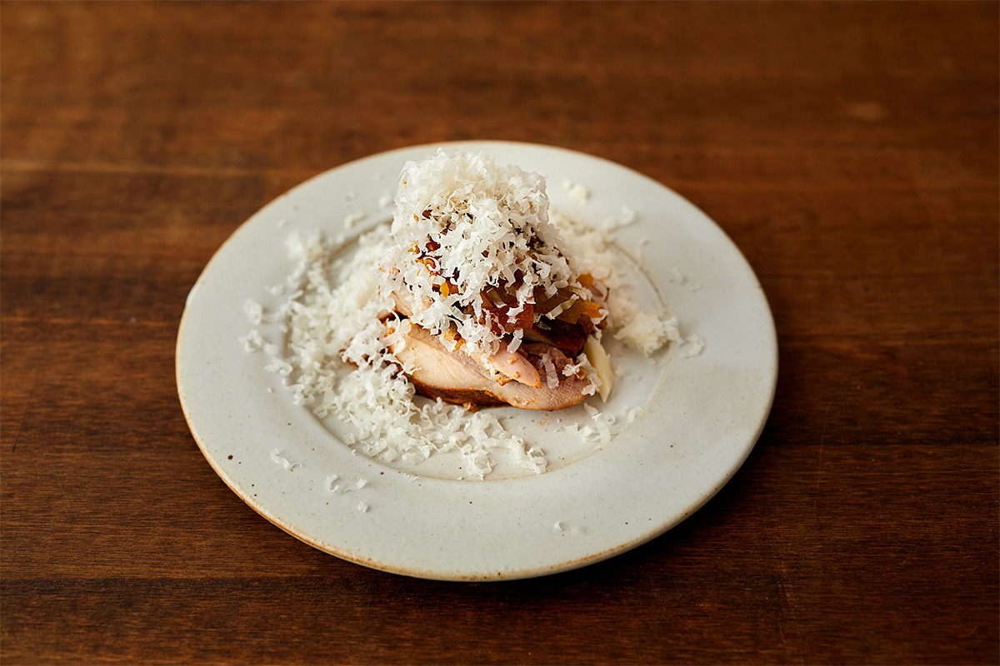
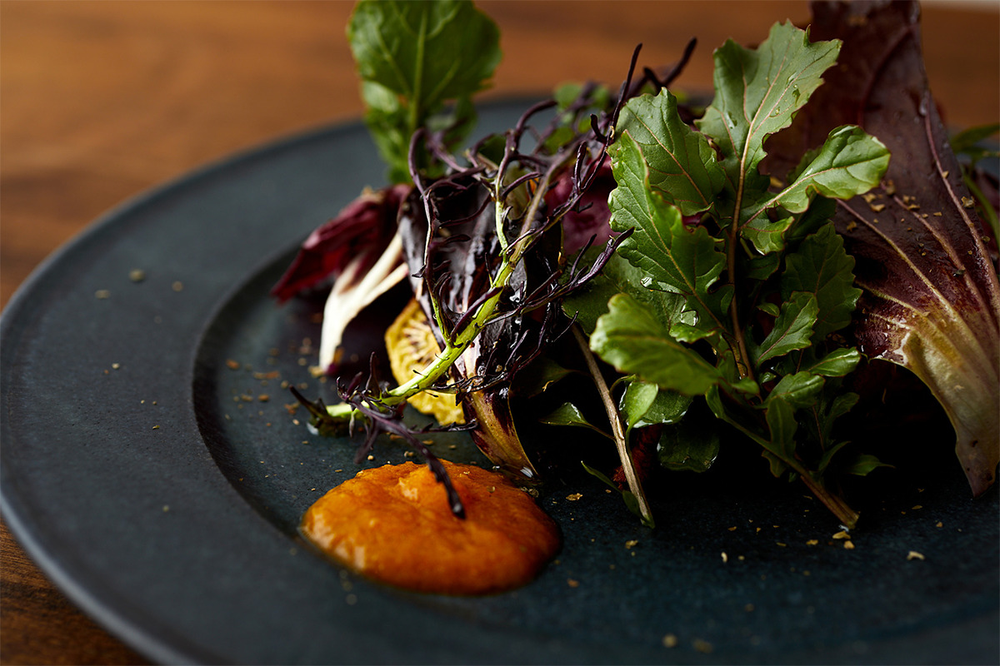
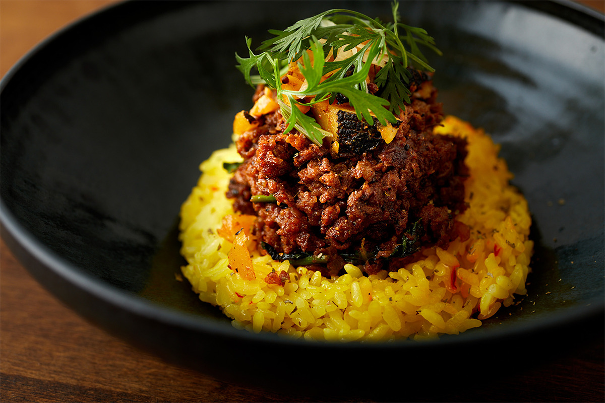
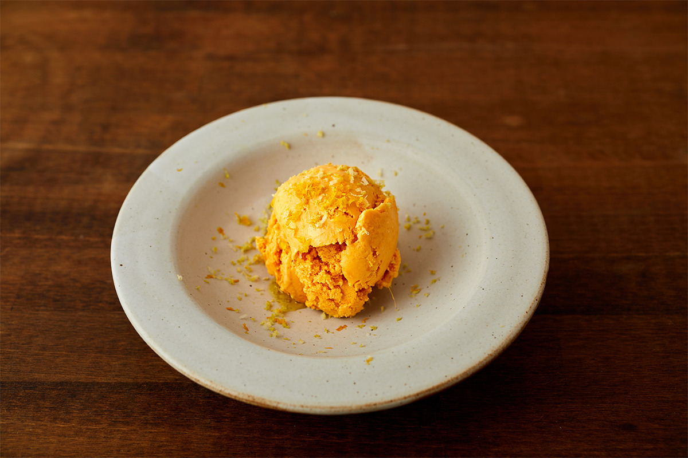
«Акинбо»
- Адрес
- префектура Сага, Сага, Ямато-тё, Кавками, 475
- Телефон
- +81 80-6426-4170 (только по записи)
- Часы работы
- обед с 12:30, ужин с 19:00
- Выходные
- четверг, пятница
Сыроварня
Nakashima Farm в Уресино
Сыр для «Акинбо» делают на молочной ферме Nakashima Farm в городе Уресино. Хозяйством руководит третье поколение семьи: глава фермы вернулся в родные места и принял семейное дело. Ферма замкнула круг: рисом с собственных полей кормят коров, из навоза делают компост, а компост возвращается на поля.
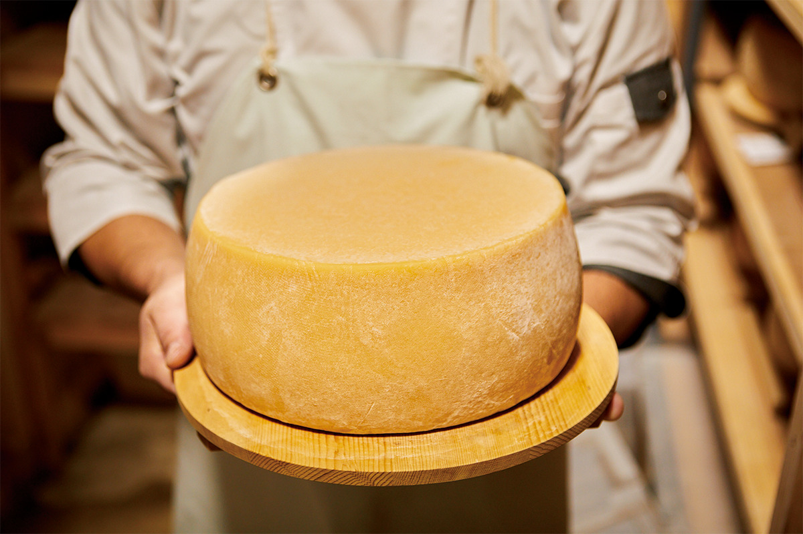
Сыр варят из тёплого, только что надоенного молока по собственному методу, который на ферме называют «не терять тепло коровы», и он получал международные награды. Nakashima Farm первой в Японии начала выпускать коричневый сыр, а позже открыла кофейню, где кофе заваривают на молоке. Ферма даёт работу жителям округи и устраивает события, которые связывают людей, город и пастбище.
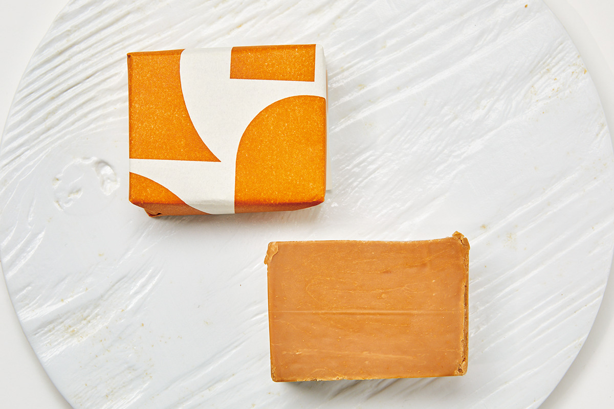
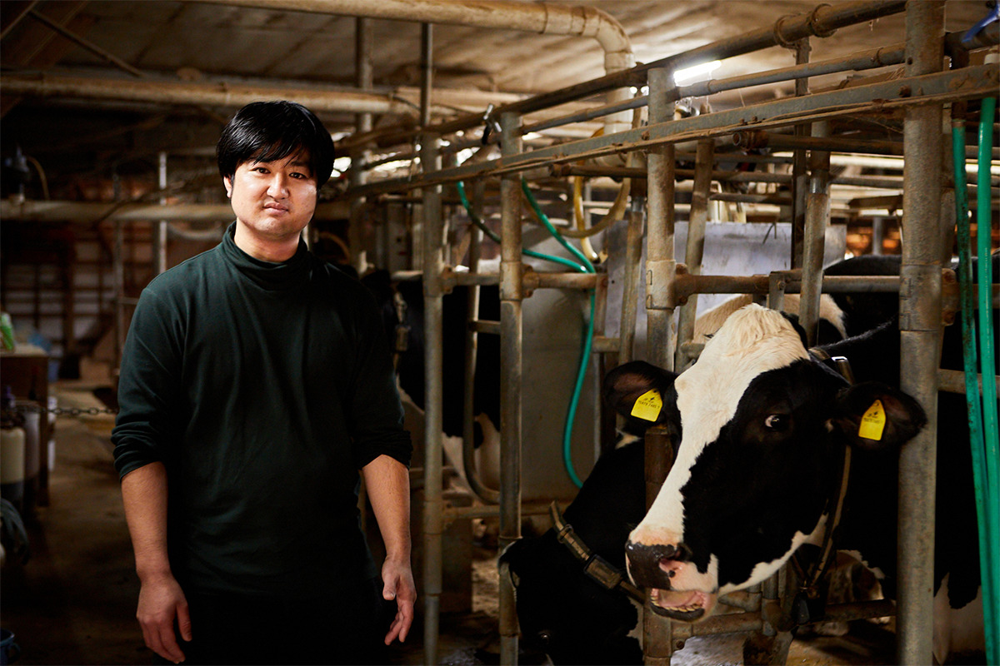
«В Саге много интересных производителей и заведений. Надеюсь, гости будут рады с ними познакомиться»
глава Nakashima Farm
Nakashima Farm
- Адрес
- префектура Сага, Уресино, Сиота-тё, Масаки, 1488
- Телефон
- +81 90-5293-8680
- Часы работы
- 11:00–16:00, в субботу и воскресенье с 10:00
- Выходные
- понедельник, вторник
Фото: Кэндзи Окадзаки.